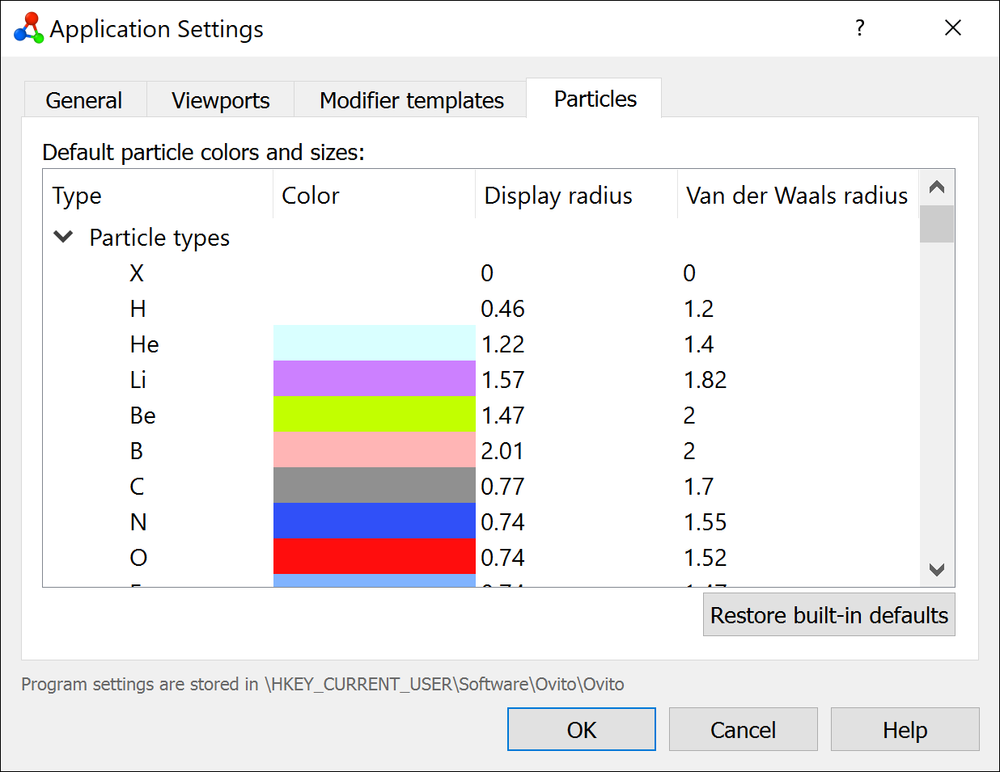

Particle-related settings
{kind=link}
This page of the application settings dialog lets you manage the program’s presets for particle colors and sizes.
Default particle colors and radii
When importing a simulation file, OVITO automatically assigns standard colors and radii to particle types based on their name. This happens, in particular, for known chemical elements such as “He”, “Fe” or “Si”. The table shows the predefined association of named particle types with corresponding default colors, display radii, and van der Waals radii. You can edit the values if needed. OVITO will remember these default values across program sessions and apply them to newly imported datasets.
Note that you can also set new default values for individual particle types from the Particle types panel, where you typically configure the appearance of particle types after importing a simulation file. Here, you can even define user-defined color and radius presets for particle types other than the standard chemical elements.
Press the Restore built-in defaults button to reset all colors and radii back to the hard-coded factory default values of OVITO and discard any user-defined presets made by you.